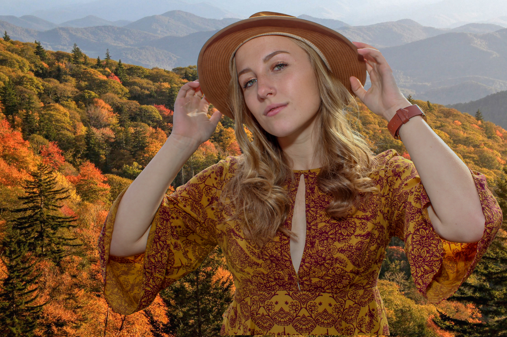
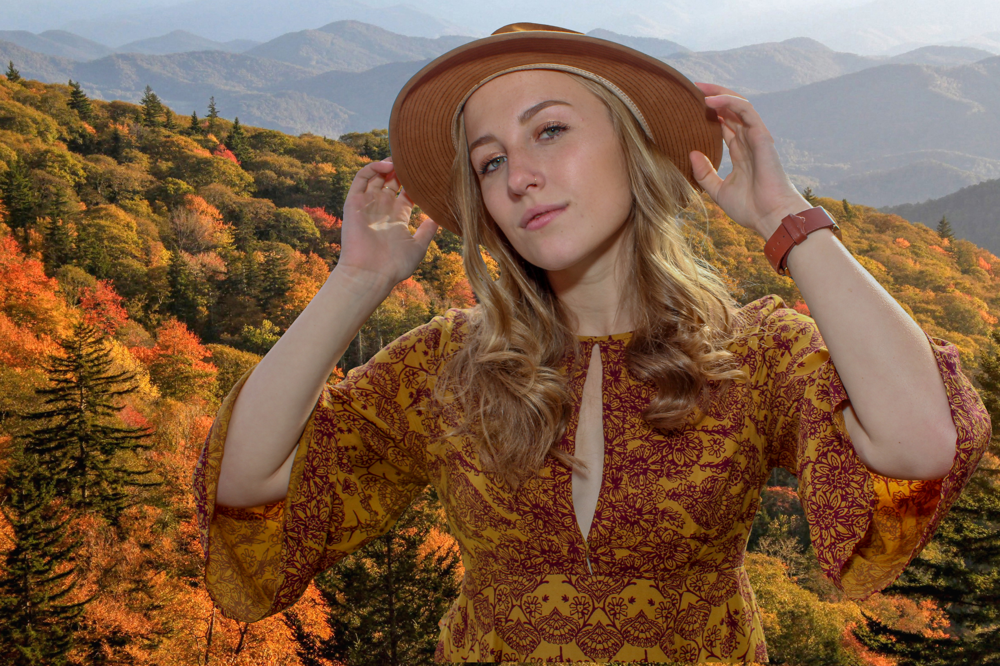

Hey there, I'm Stephen! I'm a portrait photographer with a goal to create the most creative photos possible. My photographic journey started in early 2015. I've had plenty of experience, from photographing performers in the Folkmoot International Dance Festival as well as taking pictures of wildlife in the Florida Everglades. My variety of experiences helped me to see things from various angles, and combined with my talent in multiple areas of photography, I can create images that very few photographers have done before. In fact, all of the photos that you see on this site are mine, including the landscapes. What are you waiting for? Read the testimonials from my previous clients below, and hopefully you will be inspired to schedule your own session today - creativity awaits..
AS FEATURED BY:
"Stephen is the most determined photographer I know. He takes exceptional photos because he goes above and beyond to make sure that they are his best work. From getting the perfect angle to making sure the client is happy and comfortable during the shoot, it's Stephen's personal touch to his photography that puts him above other photographers."
- Rachel
"Working with Stephen is a learning experience as well as a photoshoot! His creativity flourishes from his work, but is also able to be seen first hand. Stephen understands the equipment that he is using inside and out. He also is willing to experiment with new technologies and techniques. Stephen is very patient as well, this makes working with him very easy. His photography continues to beat my expectations since the first day I saw one of his pictures."
- Emma
"Stephen was a really fantastic photographer to work with! He really valued making the experience collaborative but his own creativity was revealed with some of the unique and inspired takes he had on a classic subject. I would definitely recommend Stephen to anyone looking for not only a skilled and professional photographer, but anyone looking for a unique and quality angle."
- Alex